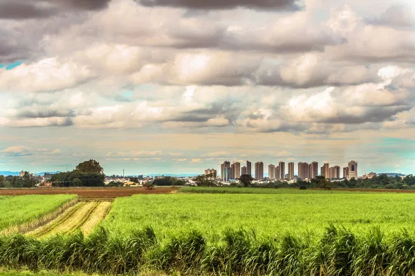
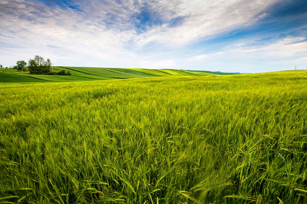
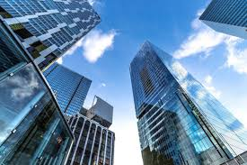

O campo e a cidade são duas esferas fundamentais para a vida humana. Ambos desempenham papéis vitais para o nosso sustento e qualidade de vida. Valorizar tanto o campo quanto a cidade é essencial para um futuro mais equilibrado e sustentável. Vamos explorar como essas duas realidades se complementam e como podemos viver em harmonia entre elas.

Campo e cidade: duas realidades complementares.
A Importância do Campo
O campo é a base da nossa alimentação, cultura e do equilíbrio ambiental. Ele é responsável por produzir os alimentos que chegam às cidades, preservar os recursos naturais e manter o equilíbrio ecológico. Além disso, o campo oferece tranquilidade e uma conexão mais profunda com a natureza.

Paisagem rural representando o campo.
A Importância da Cidade
A cidade é o centro da economia, educação e inovação. Ela concentra as oportunidades de emprego, serviços e desenvolvimento social. Além disso, as cidades são polos de cultura, arte e comunicação, onde as novas ideias florescem e se espalham rapidamente para o mundo.

https://encrypted-tbn0.gstatic.com/images?q=tbn:ANd9GcTUAZPYOSJOXe_eAZ502TrcSBAt3KZs0Uay8g&s - Ambiente urbano com seus prédios e dinamismo.
Conclusão
Valorizar tanto o campo quanto a cidade é crucial para o nosso bem-estar coletivo. A harmonia entre o desenvolvimento urbano e a preservação das áreas rurais pode trazer benefícios significativos para todos. A educação, a sustentabilidade e a conscientização são passos fundamentais para criar um futuro mais equilibrado para todos.